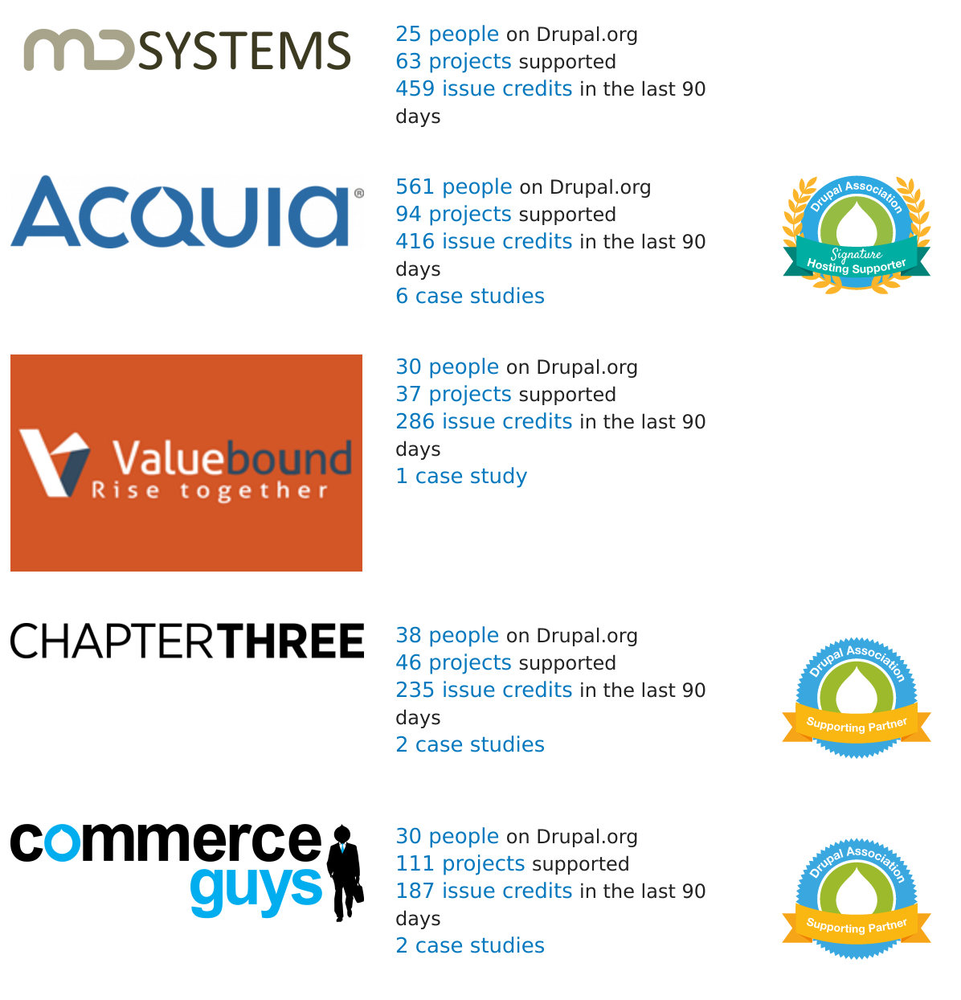

Approximately 3 and a half years ago I was finishing my job at Delo. I gave my notice in two months before, but I still had two more months to go. Yes, my notice period was 4 months (please learn from my mistake and never agree on something like that)! I was planning to take a break, travel Asia for few months, spend more time with my family and life to be easy and relaxing for some time. As you will see things didn't really work out that way...
It was early November and I was travelling home from Google Summer of Code mentor's summit. As we touched tarmac in PHL I got message from Rok Žlender. He heard I was leaving Delo and he asked if I would be interested in joining Examiner. Examiner?! Who didn't hear about it? Probably the first Drupal 7 website, biggest Drupal website on the internet at the time and code-base that most of the greatest minds of the community touched at some point. When opportunity like this appears you don't say no. I had an interview, they extended an offer and of course I said yes. And here I was, working in the position I could have just dreamed of just a few months earlier. Of course, my travel plans were postponed indefinitely as a result of that too. :)
In the past three years at Examiner I learned a lot. I was able to work with exciting technologies, fight complex problems that come with ridiculous amounts of traffic and data, intensively contribute to the Drupal community and met amazing people which I'm going to miss a lot. Team at Examiner literally built open-source mentality into it's DNA. I definitely wouldn't be able to be as active in Drupal 8 media initiatve if that wouldn't be a case. I am extremely thankful for that and every other opportunity I was given.
But, like always, every good thing also comes to an end. Lately I realized that I need to make a new step. I wanted a change in my life, which will allow me to keep growing personally and professionally. March 31st was my last day at the company and I finished it with my last deploy of examiner.com. Can it ever get better than that?
I am happy to announce that I am joining MD Systems in one week. They are a Drupal service provider based in Zurich, Switzerland. As a number one organizational contributor to Drupal they are probably the company with strongest dedication to the open source and community that I've ever seen to this day.
25 employees and 459 commit credits in last 90 days. You do the math!
I will be able to work with some of the brightest minds of the community and work on the meaningful and interesting projects. They are true Drupal 8 experts and authors of the NP8, a great Drupal 8 distribution for the enterprise media clients that was running live sites when most of the community still considered Drupal 8 to be completely unsuitable for production. I think that it is very fair to say that together we will be the strongest media experts for Drupal 8. If you need help with media or Drupal 8 in general do not hesitate to contact us!
I am really excited about this transition. There are already interesting new projects on the horizon that whole community will benefit from. Stay tuned!